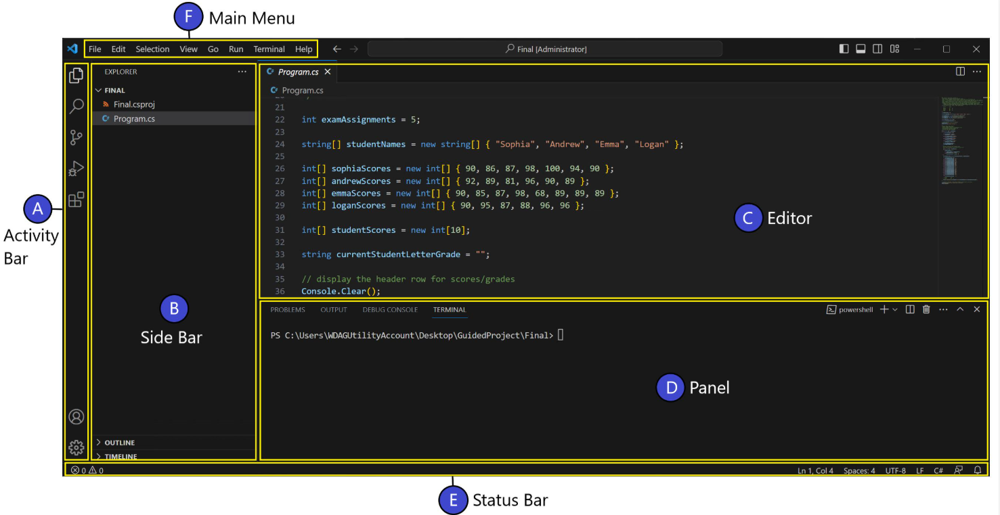

Esta guía explica cómo utilizar Visual Studio Code para crear, editar y guardar archivos HTML. Está dirigida a aprendices que están comenzando a desarrollar páginas web.
Abre Visual Studio Code. Selecciona Archivo y después Abrir carpeta. Busca la carpeta donde guardarás tus ejercicios y selecciónala. Los archivos aparecerán en el panel izquierdo.

En el panel izquierdo, haz clic en el botón para crear un archivo nuevo. Escribe el nombre ejercicio.html y presiona Enter.
Escribe la siguiente estructura en el archivo para comenzar a crear tu página web:
<!DOCTYPE html>
<html lang="es">
<head>
<meta charset="UTF-8">
<title>Mi primera página</title>
</head>
<body>
<h1>Hola, mundo</h1>
<p>Esta es mi primera página web.</p>
</body>
</html>
Presiona las teclas Ctrl + S para guardar los cambios. Es importante guardar el archivo cada vez que realices modificaciones.
Para mantener organizado tu proyecto, recuerda:
Si necesitas aprender más sobre el editor, consulta la documentación oficial de Visual Studio Code .
Visual Studio Code permite escribir y organizar código de manera sencilla. Con la práctica podrás crear tus propias páginas web utilizando HTML.